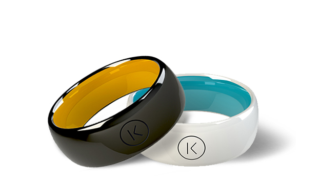
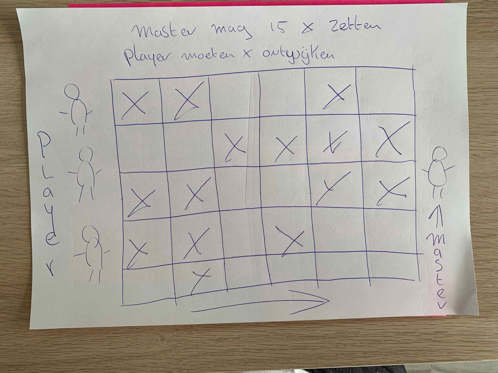
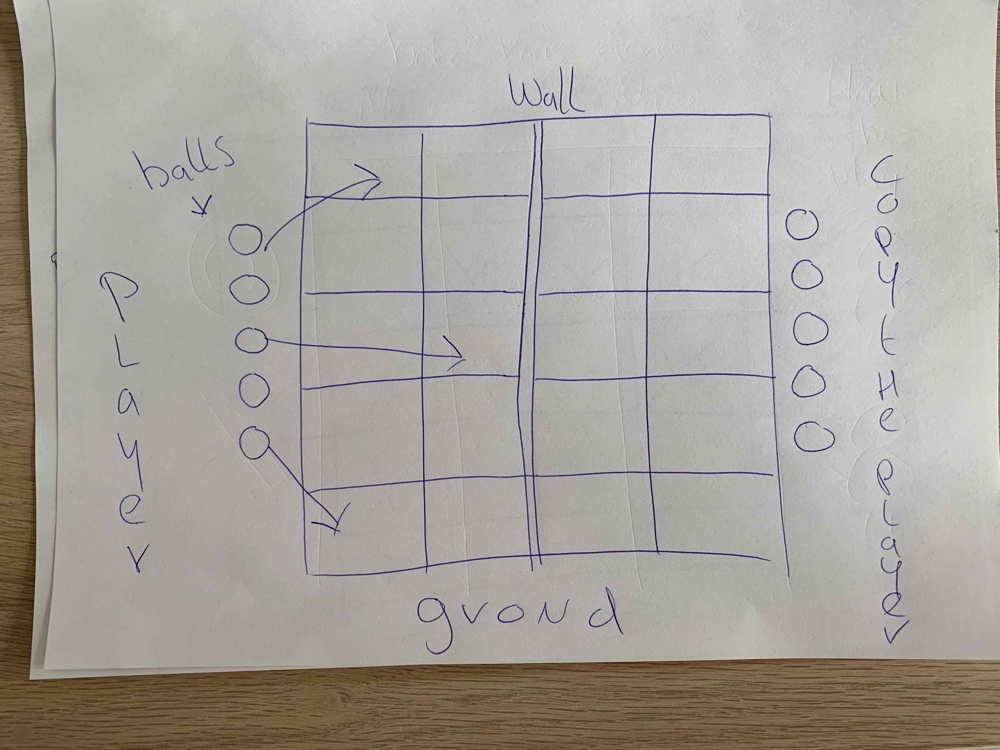
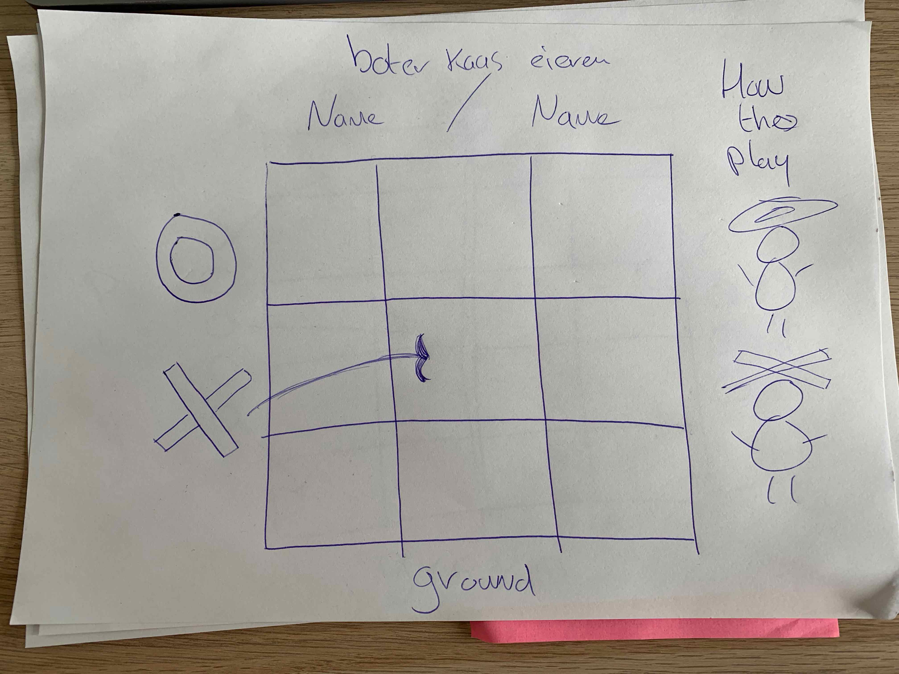
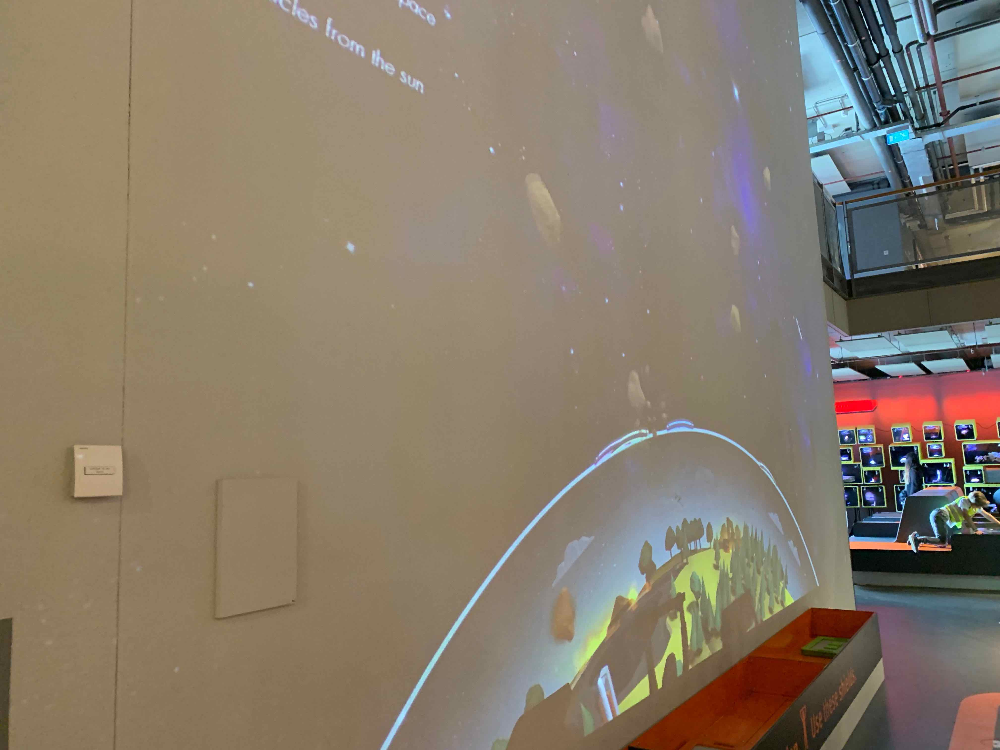
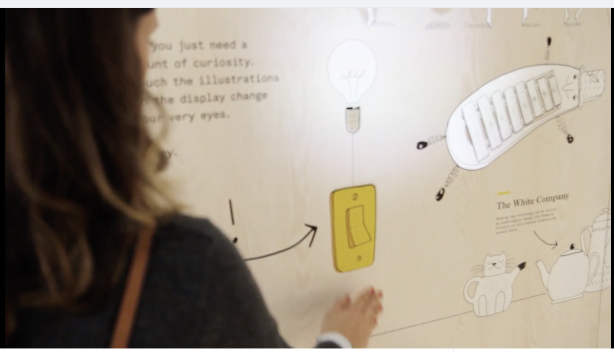
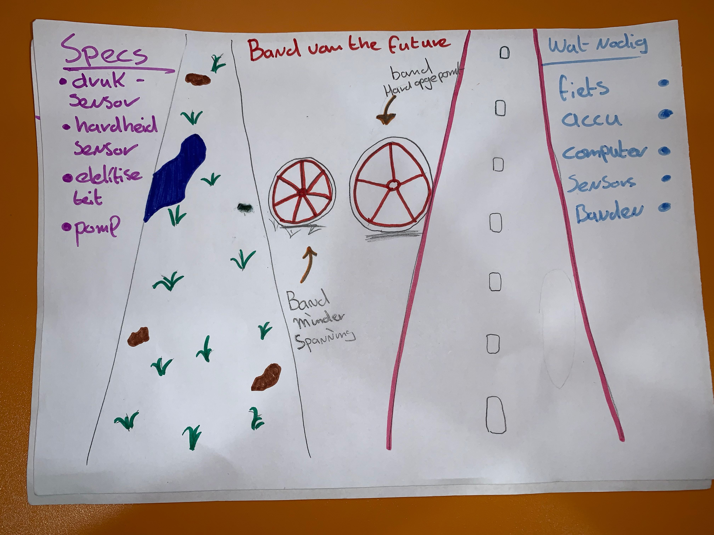
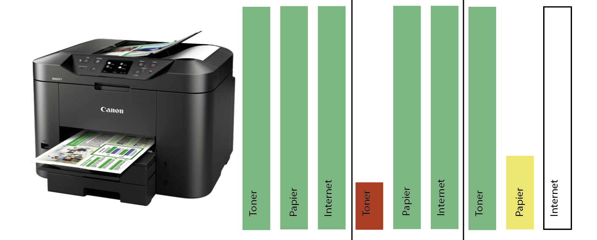

Wearables
Assignments
Ik zou graag een chipje in mijn arm willen. Met deze chip kan ik gegevens uitlezen over mijn gezondheid. Zo houd die bij wat je temperatuur is. Maar de focus ligt bij diabetes mensen. Deze kunnen veel baat hebben bij het hebben van deze chip. Zo moeten zijn namelijk dagelijkse en meerdere keren hun bloedsuiker meten en dat is geen pretje.
Maar de oplossing zit hem in deze chip. Want deze chip gaat een jaar mee. Wat het voordeel meebrengt want zij hoeven niet meer te prikken voor om hun bloedsuiker te meten. Om de gegevens uit te lezen heb je een mobiel nodig met de een APP van de chip. Deze kan dan worden uitgelezen door kort je mobiel over de chip heen te halen met behulp van de NFC in je mobiele telefoon. en zie je in een mooi overzicht wat je waardes zijn en hoe het met je lichaam gaat.

Research
Wearables zijn mooie, nieuwe, snufjes in de huidige tijd. Er komen ook steeds meer wearables bij die een stukje technologie in zich hebben. Doordat de technologie kleiner en smaller kan worden gemaakt worden er ook kleine wearables gemaakt. Denk bijvoorbeeld aan een smartwatch. Waar je vroeger een hele laptop moest mee sjouwen, past nu goeie technologie in een horloge. Meerdere bedrijven maken smartwatch en er komen er ook steeds meer bij. Eerst waren het de Tech bedrijven die een smartwatch maakte. Nu zie je ook steeds meer designers horlogemakers een smartwatch lijn op de markt te brengen. Zo kwam ik laats bij Diesel een nieuwe smartwatch tegen. Waarmee je je sportactiviteiten kan bij houden.
Maar wat mij meer interesseert was een nieuwe ontwikkeling van een ring. De naam K-ring is gemaakt van zirconia keramiek en verkrijgbaar in zwart en wit. Wat de ring speciaal maakt is dat je er betalingen mee kan verrichten. Ook hoef je de ring niet op te laden en is die water dicht. Om een betaling te doen maak je een vuist en tap je de ring tegen de betaalautomaat. Betalingen boven de 25 euro vereist een pincode. Ook is het mogelijk om met de ring te reizen met het ov. Bovenal alleen nog in UK geldig.

Reflect
Er gaan steeds meer wearables bij komen, om ons leven één stukje makkelijker te maken. Zo hoop ik zelf dat er een slimme lens voor in je oog komt. Waardoor je ook scherp mee ziet, maar ook een heel interactief lens in je oog hebt. Het idee van google glas maar dan een stuk slimmer. En ook weer een stukje AR in verwerkt zit. Ik verwacht in de toekomst steeds meer slimme apparaten die wij om ons heen dragen.
Playful Interactions
Assignments

Bij dit spel heb je player en een master. De master player moet op een scherm X zetten waar hij/zij denkt dat de player op gaan staan. Om zo ervoor te zorgen dat de players afvallen. De player moeten samenwerken en gokken welke pad ze kunnen nemen.

Bij dit spel heb ik het idee om met witte balls te werken. Door op een vak de leggen kleur het vak en de bal door projectie. De tegenstander legt ook balls neer op het veld en moet de balls van de andere player zoeken om zo te winnen in het spel.

Boter kaas en eieren kunststof rondje en kruis te gebruiken kan je een groot veld gebruiken. Waardoor de players zich door heen moeten bewegen. Door het rondje of kruis boven je hoofd te houden kan je een plekje in het vak vast leggen. Met een beeldscherm kunnen ze beter zien waar er nog plekken over zijn.
Research
Bij Nemo zag ik een playful interaction met een projectie werd op de muur de aarde weergegeven. Rotsblokken kwamen naar beneden. Kinderen konden dan met een soort van shield de rotsblokken wegkaatsen. Door te wegen op het field zag je jou shield op het scherm en kon je zo de rotsblokken tegen houden. Hier ben ik eigenlijk op het idee gekomen bij het spel van boter kaas en eireren. Want Doordat de kinderen met een soort van schuim schield. Konden zij de rotsblokken wegkaatsen van de aarde. Op die schuim schield zat een code die herkerd werd door de computer en zo zag het op het scherm dat je een schield boven de aard hield.

Interaction Wall

De bedoeling is dat mensen de muur met tekeningen aanraken. Door aanraking licht het plaatje op en gebeurt er interaction.
De interaction werkt door sensors die achter de tekening verwerkt zit. En bij aanraking wordt er een code geactiveerd wat ervoor zorgt dat er licht op de tekening verschijnt met een projectie. Je kan het zowel alleen als met meerdere mensen spelen. Het systeem kan meerdere aanraking aan.
Zie hier de video.
Reflect
Er zijn al verschillende manieren waar Playful Interaction wordt uitgevoerd. Denk aan speeltuinen waar op een bepaalde manier wordt beïnvloed om dingen te doen om weer dingen te creëren. Hierdoor worden kinderen (mensen) gemotiveerd om wat te gaan doen. Ik hoop meer playful interaction te vinden in de openbare ruimtes. Zodat het leuker wordt om er te zijn en om on contact te komen met mensen.
Artificial Creatures
Assignments
De fiets die je overal naar toeneemt. Deze fiets je jouw best vriend. Want het weet op wat voor soort terrein jij rijdt. Door gebruik van sensor en hardheid sensor. Weet de fiets op wat voor soort ondergrond jij rijdt. Maar wat doet die sensors en wat gebeurt er dan als de fiets weet op wat voor grond jij rijdt. Mocht je op asfaltweg rijden dan worden je banden onder meer druk gezet. Door een ingebouwde pomp op de banden kan er dus meer of minder lucht in de banden worden gepompt.
Zo het idee is dan dat op glad wegdek de banden hard opgepompt zijn, om snel door te fietsen. En bij wegdek op grasvelden of door de natuur, detecteert de fiets dit en word er wat lucht uit de banden gelaten. Zodat ze wat zachter zijn en meer grip hebt. Ook zorgt het ervoor dat je minder snel een lekke band krijgt doordat er minder spanning op de band staat op ruwterrein.
De fiets zelf is verbonden met een klein computertje die geprogrammeerd is. Door zijn sensors kan het bepalen wat voor wegdek de gebruiker fiets. En kan dit in een sec aanpassen. De gebruiker merkt hier niks van. Om de banden op te pompen wordt gebruik gemaakt van de elektriciteit van de accu. Dus je hebt hiervoor wel een elektrische fiets nodig met een motortje.
Waarom dit nou een goed concept is: er behoefte aan is dat er een fiets is voor meerdere terreinen en je dus maar dus één fiets hoeft te kopen. Ook is het fietsen veiliger, omdat de fiets zelf regeld wat voor spanning op de banden komen te staan. Waardoor de kans op vallen of een ongeluk kleiner is.

Research

Bij dit assignment werden wij gevraagd om de Homeostasis Model voor een apparaat. In de les vertelde Chris over de Robot Vaccuum cleaner. Dat die energie stof en veilig is. Hij legde uit dat het gedrag van de robot stofzuiger veranderd naarmate hij voller komt te zitten. Hij heeft minder power energie om stof op te zuigen en hoe voller hoe zwaarder hij wordt.
Heb gekozen voor een printer deze heeft drie dingen nodig om te kunnen printen. Inkt, papier en internet of usb verbinding met de computer. Als alles goed is en vol is dan zijn er geen problemen. Zo kan hij printen wanneer de gebruiker om vraagt.
Maar wanneer er geen papier meer is of de inkt is op. Dan gaan wij problemen krijgen. De printer wil niet meer kunnen printen en vraagt om hulp. Zelfde geldt ook voor als er geen internet meer is. Dan is je printer hulpeloos en kan je geen taken sturen om je gemaakte werk uit te printen.
Reflect
Voor deze topic heb ik mijn creatieve brain aan het werk gezet. Ik moest iets verzinnen met een fiets waar je creatures op kan zetten. Ik vond het wel een beetje moeilijk om te verzinnen, omdat ik best wel geïnteresseerd ben ik de nieuwste technologie van fietsen en andere dingen. Maar juist daarom is het moeilijk, omdat alles wat ik bedacht bestond dus al. Dus ik verder bedenken en toen kwam ik met het idee van de banden die automatisch oppompen.
AR&VR
Assignments
Car
Website van auto's zijn vaak heel mooi gedesignd maar bieden niet meer dan alleen mooie foto's daarom heb ik het idee om met een app en gebruik van een VR het gevoel geeft dat je met de Bril in de nieuwe auto zit en het dashboard in werking kan zien. Zo kunnen mensen thuisblijven en hoeven ze niet per se naar de store om de auto te komen bekijken. Het voordeel hiervan is dat mensen eerder geneigd zijn om een auto online te kopen.
Healthcare
Bij healthcare zit ik te denken aan het gebruik van AR, door met een app op iPhone of iPad. Door patiënten die in het ziekenhuis liggen met een app kunnen zien waar ze ziek zijn in hun lichaam. De doctor stelt de app in en laat dan zien aan de patiënt waar het probleem zit met behulp van AR.
Public transport
Op het station of bij een halte pak je de AR ov-app erbij. Door de camera te kijken en te richten op het spoor/halte weet de app welke trams, treinen of bussen er aan komen. Je zit dan een schema in de app bij de halte staan welke ov er als eerste komt en hoe lang het nog duurt.
Research
Het Poëzie Museum is een virtueel museum op het Museumplein in Amsterdam, 24 / 7 gratis te bezoeken via een app. Een innovatieve cross-over tussen literatuur, vormgeving, typografie, architectuur en Augmented Reality. 60 hoogtepunten uit de Nederlandse poëzie, samengesteld door Anna Enquist.
Wat ik mooi vind is dat het gratis te bezoeken is door gewoon naar het Museumplein te gaan en dan de app er bij te pakken en de kunstenwerken kan bekijken op je eigen mobiel.
Zie hier de website poeziemuseum.
Reflect
Hoe ik terug kijk op de excercise, dat ik het naar me zin had met vooral MadMapper. Door firguren te projecteren op voorwerpen kreeg je een dimensie. Zo leek het net of het echt 3D was. Als je met meerdere projecties kan werken dan krijg je nog een beter beeld met het 3D effect.